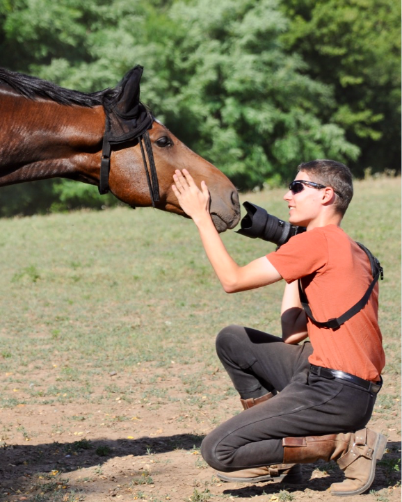

Amennyiben ez mégsem történne meg katt valahova a képernyőn és várj 2 másodpercet.
A weboldal egyelőre mobileszközöket nem támogat
Hello, Tomka Botond vagyok!
A BME gépészmérnöki alapképzésén végzem tanulmányaimat, emellett fotózok, videózok, tanulom a UI-UX tervezést valamint sportolok. Két kedvenc sportom a kerékpározás (országutival) és a lovaglás. Rendkívül élvezem az új dolgok alkotását, létrehozását és megálmodását, ezért élvezem a modellezést, ezért mentem mérnökhallgatónak és ezért vágtam bele a UI-UX design-ba.
Fotós pályámról alább olvashatsz
Miért fotózok, mióta és miért?

Nagy élmény volt amikor tavaly év végén a Lovas Nemzet magazin jubileumi fotópályázatán közönségdíjas lett az egyik fotóm. 6 éve kezdtem el fotózni, eleinte még csak családi programok alkalmával került kezembe fényképezőgép és így kezdtem el fotózni. Akkor még nem tudtam hogy ez a hobbi viszonylag hamar fog a szenvedélyemmé, “függőségemmé” válni. Említettem, hogy lovaglok. Ez a kettő számomra egybenőtt valamennyire, ugyanis a lovardában kezdtem komolyabban, rendszeresen fotózni és tapaztalati autodidakta módon valamint apukámól megtanulni a szakma rejtelmeit. Azóta már jelentősen magasabb szinten űzöm ezt a (kezdetben még csak) hobbit. Én a sport- valamint állatfotózásban találtam meg az utam, számomra ez az etalon, de az egyéb rendezvényeken is jól elvagyok.